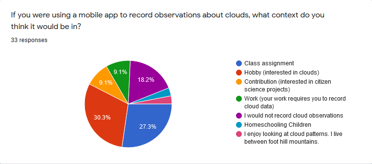

Citizen Science Cloud Observation Application
Design for a crowd-sourced cloud observation software
Researchers
Keziah May, Fatima Diallo, Sarah Wehelie, Benjamin Holmes
Background
NASA scientists study clouds to understand weather and learn how it affects the world. Their instruments read weather information from satallites. From that perspective, it is challenging to decern the different types of clouds in an area and it is hard to tell what is snow and what is cloud. To gather meaningful cloud data, they require images from the ground to compare to their readings.
Currently, NASA relies on observations gathered on the GLOBE Observer application. This application is well designed for recording observations, but it does not cater to other use-cases and scenarios. For this project, we designed and prototyped a mobile application that would allow observations to be collected but would also draw users back to the application through features that catered to the main personas we identified.
Research
To understand how to design this application, we explored how users interact with existing software, how they would use the application, and what features would be most attractive to them. We identified 4 main personas: scientists, children/youth, teachers, and everyday people interested in citizen science.
To derive minimum viable product requirements, we conducted a survey of 33 potential users.  We were surprised to discover that 27.3% said they would use this application in a class assignment and 3% said they would use it to homeschool children. This showed the need for teachers, parent-educators, and students to be acknowledged as primary users for this application.
One survey participant explained that they lived between foothill mountains. That meant that often when they were out on a walk in their neighborhood, they did not have cell service. For that reason, they explained that the application would need to be able to use stored photos for observations for them to be able to use it. Then, they could record images on their walk, return home, and use their home WiFi to submit their photos. This showed another important scenario: people who want to participate without cell service or mobile data.
Persona
 The design process consisted of using existing technologies and user research to plan the
development of our app. The persona I focused on was a 10 year old girl who uses the app for school.
The design process consisted of using existing technologies and user research to plan the
development of our app. The persona I focused on was a 10 year old girl who uses the app for school.
To assist in understanding the wants of such a user, I explored the preferred apps of young girls that I know personally and tried to find what makes them fun and engaging to determine the key features to include for the persona. I determined that the young girls I know like to be challenged much like they feel challenged in a game. They like puzzles and the acheivement that comes with solving them.
I also wanted to understand the context that this persona might be in when they use the app. I created a storyboard to help me visualise the user as I developed the app. In this story, I imagined that the girl would be at school, outside, participating in a class activity with her peers. This got me thinking about her teacher. In this scenario, the teacher is the one facilitating and supervising her experience. Thus, to design for the young girl, I also needed to design for her teacher or homeschooling parent to support them in the young girl's experience.
Storyboard
Journey Map
For the journey map, I completed the testing phase column of Sam's journey.
Prototypes
The prototype is split into two scenarios. In the first scenario, an expert scientist user registers for an account and completes an observation of the climate. In the second scenario, a grade school student completes a lesson during an in class activity. My portion of the prototype includes the path from the home page to the page allowing users to start lesson 2.